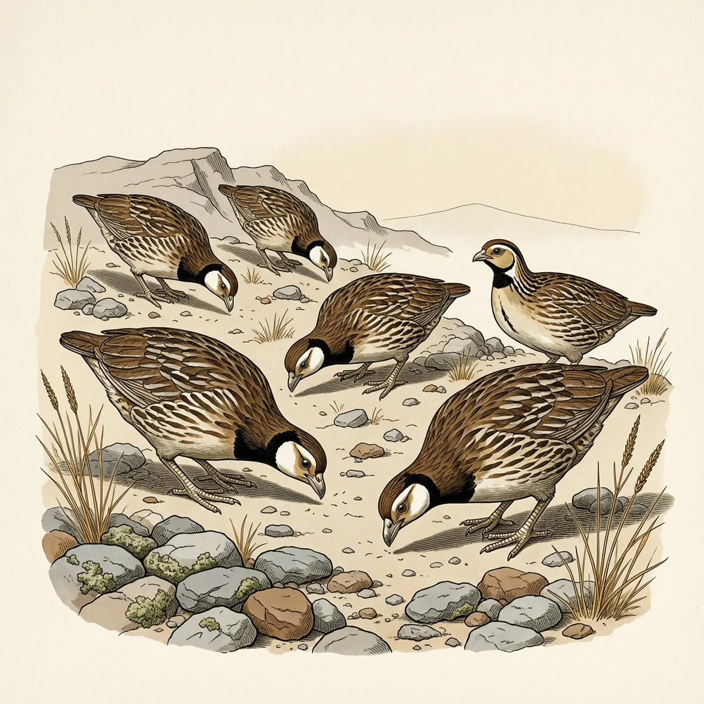
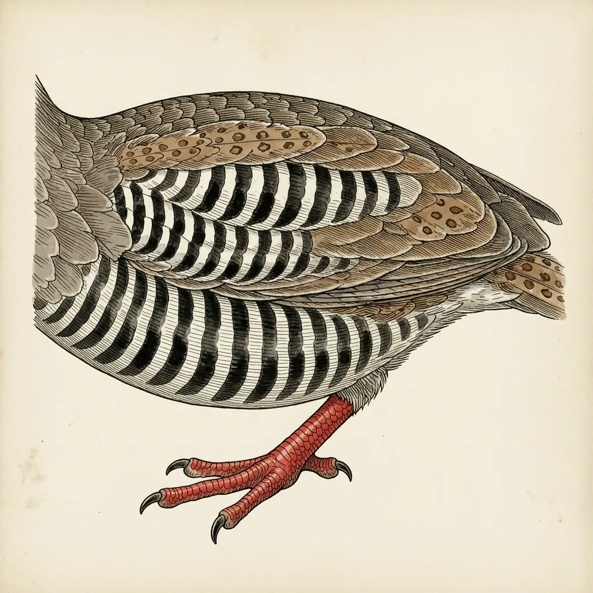

石鸡是雉科石鸡属的山地鸟类，红嘴红脚，体侧有黑白横纹。它住在低山干燥山谷与丘陵的岩坡、砂坡，分布从欧洲、中亚延伸到中国新疆、青海、甘肃和东北西南部。雌雄共同筑巢，雏鸟出壳几小时即可自行觅食。世界评估为无危，2023年仍被列入中国三有名录。
甘肃或新疆的一段低山干谷，坡面全是松动的碎石，没几棵高树。石鸡就在这样的坡上活动：在岩坡与砂坡之间走来走去，低头啄食，遇险钻进石缝。石鸡的分布很宽，欧洲、西伯利亚、阿富汗、伊拉克、伊朗、克什米尔，中国境内从新疆、青海、甘肃，经华北一直延伸到东北的西南部。这些地方的共同点是干燥、开阔、石头多：植被矮，地面行走不受阻，乱石下的缝够一头石鸡蹲进去，保命不必先靠飞。
石鸡的繁殖不靠长时间喂食。雌雄都参与筑巢，巢做在地面的隐蔽处。关键在雏鸟：出壳时一身绒羽，几个小时后便能跟着成鸟在碎石坡上自己啄食，不需要成鸟把食物叼回来。成鸟剩下的活是保温和警戒。红嘴、红脚在灰褐的体色里很显眼，体侧那道黑白横纹反倒更好用——蹲着不动时，条纹把石鸡的身体轮廓切成碎片。
石鸡在世界自然保护联盟的红色名录里是无危：分布从欧洲一直铺到中亚和中国北方，离受威胁很远。可 2023 年，它被收录进《有重要生态、科学、社会价值的陆生野生动物名录》，也就是俗称的「三有」名录。这两份名单回答的不是同一个问题——红色名录说的是这个物种整体还在不在，「三有」名录管的是单只石鸡能不能被随便抓。给石鸡命名的那份模式标本采自希腊；而在中国西北的山沟里，人们叫它朵拉鸡、红腿鸡、嘎嘎鸡。
